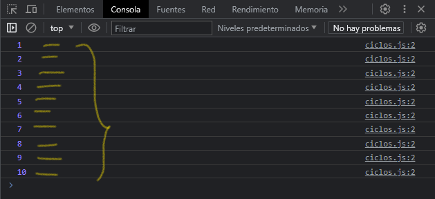

Hay muchos diferentes tipos de bucles, pero esencialmente, todos hacen lo mismo: repiten una acción varias veces. "Ten en cuenta que es posible que ese numero sea cero."
Los diversos mecanismos de bucle ofrecen diferentes formas de determinar los puntos de inicio y terminación del bucle. Hay varias situaciones que son fácilmente atendidas por un tipo de bucle que por otros.
Bucle #for
Un ciclo for se repite hasta que una condición especificada se evalué como false. El bucle for de JavaScript es similar al bucle for de Java y C.
Veamos una declaración for
for ([expresionInicial]; [expresionCondicional]; [expresionDeActualizacion]) {
instruccion
}
Cuando se ejecuta un bucle for se ejecuta la expresión de iniciación "expresionInicial", si existe. Esta expresión normalmente inicia uno o mas contadores de bucle, pero la sintaxis permite una expresión de cualquier grado de complejidad. Esta expresión también puede declarar variables.
Se evalúa la expresión "expresionCondicional". Si el valor de esta es verdadero, se ejecutan las instrucciones del bucle. Si el valor de condicion es falso, el bucle for termina. (Si la expresion condicion se omite por completo, se supone que la condición es verdadera).
Se ejecuta la instruccion. Para ejecutar varias instrucciones, usa una declaración de bloque { ... } para agrupar esas declaraciones.
Si esta presente, se ejecuta la expresion de actualización "expresionDeActualizacion". Posteriormente, el control regresa al paso 2.
Veamos un ejemplo sencillo para ver como funciona for:
for (let i = 1; i <= 10; i++) {
console.log(i)
}
En este ejemplo estamos haciendo que el bucle for nos muestre en consola los números del 1 al 10, haciendo que el numero empiece a partir del 1 y este vaya incrementando de 1 en 1 con la condición que al llegar a 10 el bucle se detenga.
Este es el resultado:
Bucle #do-while
La instrucción do...while se repite hasta que una condición especificada se evalué como falsa. Si la condición es verdadera, la declaración se ejecuta de nuevo. Al final de cada ejecución, se comprueba la condición. Cuando la condición es falsa, la ejecución se detiene.
Veamos un ejemplo:
let i = 1
let m = 8
do {
let res = m * i
console.log(`${m} * ${i} = ${res}`);
i++
} while (i <= 10);
En el ejemplo anterior estamos realizando una tabla de multiplicar, la variable i representa las veces que se repetirá el bucle, la variable m representa el numero que se esta multiplicando, en este ejemplo es el numero 8.
Bucle #while
Una declaración while ejecuta sus instrucciones siempre que una condición especificada se evalué como true. Si la condición se vuelve false, la instrucción dentro del bucle se deja de ejecutar y el control pasa a la instrucción que sigue el bucle.
La prueba de condición ocurre antes de que se ejecute la expresion en el bucle. Si la condición devuelve true, se ejecuta la expresion y la condición se prueba de nuevo. Si la condición devuelve false, la ejecución se detiene y el control se pasa a la instrucción que sigue.
Veamos un ejemplo:
let contador = 1
let multiplicador = 7
while (contador <= 10) {
let resultado = multiplicador * contador
console.log(`${multiplicador} * ${contador} = ${resultado}`)
contador++
}
En el ejemplo anterior, estamos simulando una tabla de multiplicar con el numero "7". Al igual que el bucle do...while asignamos una variable llamada contador la cual al entrar al bucle aumentara su valor con el valor que le asignemos. La condición para que el bucle se cumpla en cada vuelta es que la variable contador sea igual o menor a "10". Cuando la condición sea falsa o deje de cumplirse como verdadera, el bucle se detendrá.